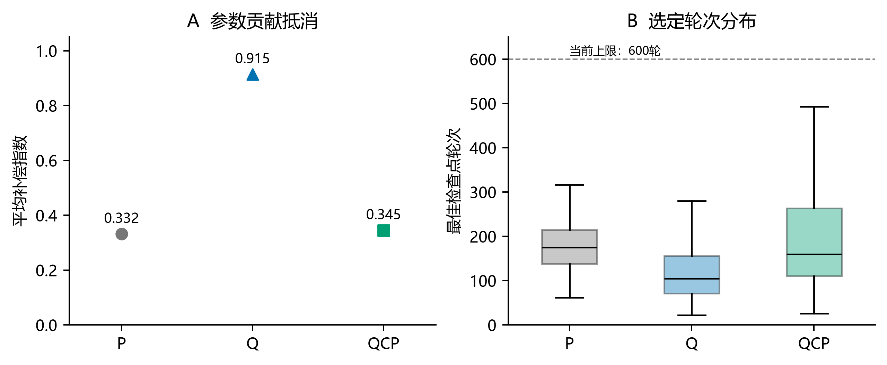
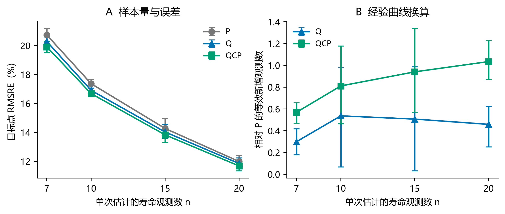
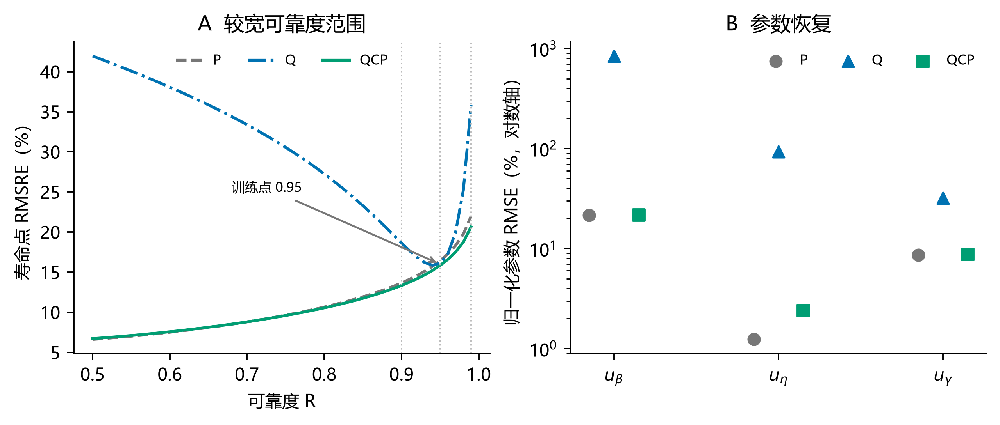
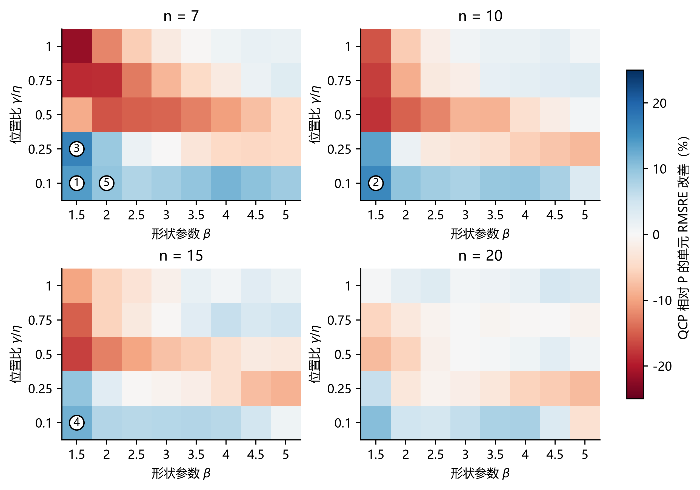
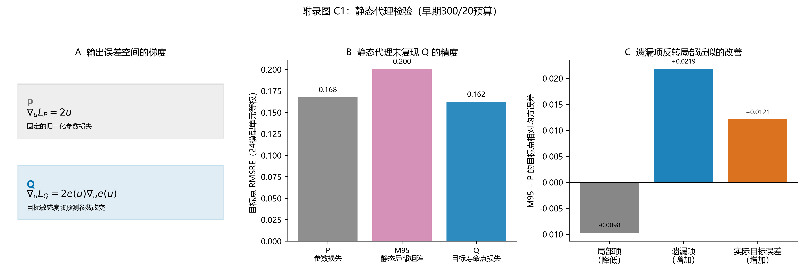
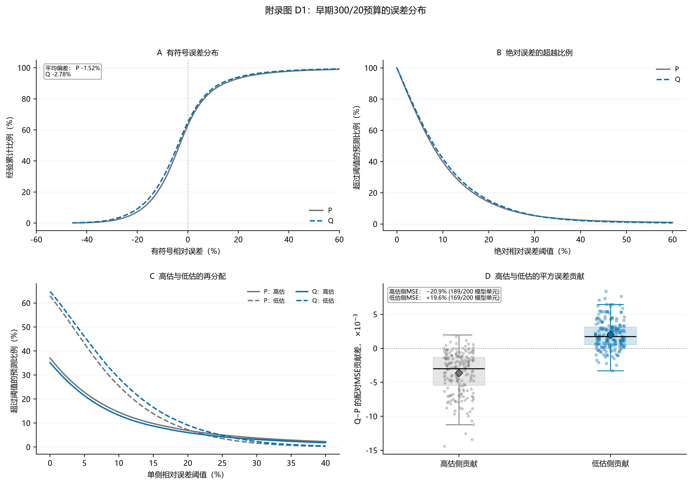

Study02 v2.7.0 · Reading copy generated from the editable manuscript附录：三参数 Weibull 寿命点估计中的任务对齐
配套正文：Study02论文初稿 v2.7.0。附录按 A–F 编排，图表与公式按所属附录独立编号。
本附录提供正文方法的复现细节、完整分层结果和数学推导。附录A–B主要对应共同预算比较；附录C的数学推导适用于所述损失，M95消融及附录D使用早期300/20预算；附录E提供复算索引，附录F报告补充对照。固定加权QP的同预算对照见B.9。
附录 A 实验设计、训练与配对推断
A.1 数据与对照设计
表 A1 实验设计与对照定义
| 项目 |
研究设计 |
| 参数空间 |
β={1.5,2,…,5}；η=1000；γ/η={.10,.25,.50,.75,1}；n={7,10,15,20} |
| 样本 |
每个参数—样本量组合独立生成 300 组样本；按重复抽样编号模 5 分折 |
| 比较方法 |
P / Q / QCP，使用相同的三输出网络和参数取值约束变换 |
| 方法差异 |
P、Q 使用不同主损失和对应验证选点指标；QCP 保持 Q 为主目标并增加 P 可行域及可行选点 |
| 模型单元 |
10 个随机种子×4 个样本量×5 折=200 个三方法配对单元 |
| 训练目标与主评价 |
以留出测试集 x0.95 的总体 RMSRE 判断目标对齐 |
| 跨寿命点评价 |
对同一组三参数预测派生 x0.90、x0.95、x0.99，判断单点目标的曲线代价与 QCP 恢复 |
| 探索性消融 |
3 个随机种子×2 折×4 个样本量=24 个 P/M95/Q 匹配单元；与主分析分开汇总，不计算置信区间 |
P 为三个归一化参数平方误差的等系数和；归一化消除量纲差异，等系数作为参数恢复的共同参照。Q 直接优化 x0.95 的相对平方误差，仍由网络输出三个 Weibull 参数。通过链式法则，Q 形成随参数点和当前预测变化的动态参数度量，并保留参数交叉项。QCP 求解 minLQ，同时满足 LP≤τj：Q 定义主要优化量，P 规定可接受的参数偏离范围。
A.2 训练设置与配对关系
- MLP：
n-256-128-64-3，ReLU，双精度浮点计算（float64）；参数取值约束变换保证
β^>0、η^>0、0<γ^<min(X)。
- Adam，学习率 10−3、权重衰减 10−4、批量大小 256；三条路线统一最多训练 600 轮，早停耐心值为 60 轮。
- 优化器设置在三条路线间保持一致；损失数值尺度、QCP 约束与模型检查点选择规则随方法定义变化。
- 随机种子：42、2026、3407、17、73、314、2718、4099、8128、12011。
- P/Q/QCP 在每个模型单元内共享训练、验证和测试数据，输入标准化器、初始化、首轮小批量顺序、网络结构与最大预算。
- 每条路线包括 200 次模型训练和 480,000 条留出测试预测；所有模型均完成训练，预测均为有限值并满足参数支持域。
48,000 组独立寿命样本来自 160 个固定真值单元各 300 次抽样；每组样本在五折中恰好作为一次测试数据，并由 10 个随机种子对应的模型分别预测。因此，每条路线的 480,000 条预测包含同一测试样本上的训练随机性重复。每个 (n,k,s) 组合分别训练网络，200 个模型单元与 160 个固定真值单元表示不同的汇总层级。
A.2.1 实验先后顺序与阈值来源
表 A2 实验先后顺序与阈值来源
| 阶段 |
设置与用途 |
测试信息的使用 |
| 早期 P/Q 比较 |
最多训练 300 轮、早停耐心值 20；匹配 P 模型的最佳验证参数损失作为后续约束参考 |
完成初次评价后用于方法开发与机制分析 |
| QCP 约束与预算选择 |
8 个验证单元、48 次候选训练；另以 8 次训练检查预算扩展；确定 c=1.5,ρ=0.1 与 600/60 设置 |
两个选择阶段均仅使用训练集和验证集 |
| QCP 评价 |
200 次训练，τj=1.5LP,ref,j |
固定设置后评价；参考量来自早期 P 模型 |
| 共同预算比较 |
P/Q 各进行 200 次 600/60 训练，与 QCP 的 200 个模型比较 |
读取早期测试结果后的预算敏感性分析 |
| 机制与分布分析 |
读取已有预测，派生跨寿命点、区域及误差形态 |
事后分析，不新增模型训练 |
约束筛选使用种子42、折次1和3、全部四种样本量；候选为 c∈{1.25,1.5,2.0} 与 ρ∈{0.03,0.1} 的六种组合。在至少7/8个验证单元满足阈值的候选中，按汇总验证Q损失选择。乘子初值为0，ρ在每次训练内固定；乘子更新使用当轮各小批量损失的样本数加权平均，检查点另以固定轮末模型评价验证集。候选筛选与最终200个模型全部可行的检查属于不同层级。
QCP 模型检查点的可行性由验证集平均参数损失是否满足阈值判断，约束范围不延伸为单条预测的误差保证。正文所报 87.2 s 为 QCP 单次训练的中位耗时，未计入早期 P 参考训练及约束筛选成本。
A.2.2 共同预算下的运行细节
表 A3 共同预算下的运行细节
| 路线 |
最佳训练轮次中位数 |
最佳训练轮次的 90% 分位数 |
运行至 600 轮上限的模型数 |
累计训练耗时 / h |
单模型中位耗时 / s |
| P |
175.5 |
265.3 |
0 |
2.51 |
41.4 |
| Q |
105.0 |
217.5 |
0 |
1.96 |
29.6 |
| QCP |
159.5 |
362.3 |
3 |
5.58 |
87.2 |
表中运行信息来自 artifacts/qcp_main_analysis/analysis/summary.json。累计耗时为当前各路线正式训练的运行时间之和，单模型中位耗时反映典型运行时间；二者不含前置方法开发。相同最大训练预算提供相同的训练轮次上限，而非相同的计算量或开发预算。
逐运行元数据另记录：200 个早期 P 参考模型累计 0.821 h，48 次约束筛选训练累计 0.331 h，8 次预算检查累计 0.108 h。若把这些前置训练全部归于 QCP，再加当前 QCP 的 5.58 h，累计约 6.84 h；若参考 P 已因原始比较而存在，QCP 的新增训练成本约为 6.02 h。各值均为单次训练计时求和，不是并行任务的墙钟历时，也不含分析和数据生成。训练实现使用 PyTorch CPU、float64、每进程一个计算线程；原记录未完整绑定处理器型号和并行负载，因此不作跨硬件速度结论。
A.3 风险聚合与配对区间
I=(RMSREP−RMSREQ)/RMSREP.(A.1)
估计对象是在参数网格内对各样本量和设计单元等权时，两种方法面向新留出样本与训练随机性的 RMSRE 及其相对差。有限样本估计先对 200 个 (n,k,s) 配对单元的 MSE 等权平均，再开方计算 RMSRE 与 I。区间估计按 n 分层重采样折次，同时全局重采样随机种子，始终保持方法配对，共重复 200,000 次。由于折间训练集重叠且仅有 10 个随机种子，95% CI 为设计级经验 bootstrap 近似区间。逐样本量区间未作多重比较校正，仅用于描述性分层；QCP−Q 与 QCP−P 对比采用同一聚合和重采样规则。
附录 B 完整结果与分层分析
B.1 目标点误差与模型单元方向
下表 RMSRE 指 x0.95 的均方根相对误差，即逐条相对误差平方后的平均值再开根号，数值越小表示总体平方风险越低。分析文件中的历史字段 rRMSE 使用同一公式。
表 B1 目标点误差、参数损失与补偿
| 路线 |
总体 RMSRE |
平均参数损失 |
参数补偿指数 |
| P |
16.432% |
0.05385 |
0.33226 |
| Q |
16.092% |
71.71416 |
0.91455 |
| QCP |
15.841% |
0.05522 |
0.34532 |
表 B2 目标点的配对效应及模型单元方向
| 对比 |
RMSRE 相对改善 |
95% CI |
有利模型单元 |
有利随机种子 |
| Q vs P |
2.069% |
[1.280%,2.811%] |
172/200 |
10/10 |
| QCP vs Q |
1.562% |
[1.241%,1.898%] |
196/200 |
10/10 |
| QCP vs P |
3.599% |
[3.027%,4.180%] |
200/200 |
10/10 |
QCP 的 200 个所选模型检查点均满足验证集参数约束。共同预算汇总在早期测试结果读取后形成，因此作为预算敏感性分析解释。

图B1 A为共同预算预测的平均补偿指数，B为每路线200个模型的最佳检查点轮次分布；箱体为四分位区间，中线为中位数，须线延伸至1.5倍四分位距内的最远点。离群点不在该箱线图中显示；虚线标明当前600轮上限。目标点精度与配对效应见正文表1、图3，不在此重复。
B.2 跨寿命点三路线总比较
跨寿命点分析直接把 200 个配对模型单元保存的三参数预测代入同一 Weibull 寿命公式，无需重新训练。正改善表示表头左侧路线的总体 RMSRE 更低。
表 B3 跨寿命点三路线比较
| 寿命点 |
P RMSRE |
Q RMSRE |
QCP RMSRE |
Q 相对 P |
QCP 相对 Q |
QCP 相对 P |
QCP-vs-P 有利真值单元 |
| x0.90 |
13.657% |
18.630% |
13.336% |
−36.411% |
28.417% |
2.353% |
74/160 |
| x0.95 |
16.432% |
16.092% |
15.841% |
2.069% |
1.562% |
3.599% |
76/160 |
| x0.99 |
21.960% |
35.820% |
20.647% |
−63.114% |
42.360% |
5.981% |
77/160 |
Q 在直接训练的 x0.95 上优于 P，在 x0.90 与 x0.99 上明显退化；QCP 相对 Q 和相对 P 的三个配对区间均排除 0。QCP 相对 P 的结果表示总体风险较低，区域方向仍由 160 个固定真值单元的统计描述。三个离散寿命点用于检验跨点变化，完整分布精度需要更密集的可靠度水平评价。
表 B4 跨寿命点配对效应区间
| 寿命点 |
Q 相对 P 改善的 95% CI |
QCP 相对 Q 改善的 95% CI |
QCP 相对 P 改善的 95% CI |
| x0.90 |
−38.508% 至 −34.321% |
27.501% 至 29.282% |
1.809% 至 2.904% |
| x0.95 |
1.280% 至 2.811% |
1.241% 至 1.898% |
3.027% 至 4.180% |
| x0.99 |
−65.268% 至 −61.158% |
41.876% 至 42.855% |
5.277% 至 6.673% |
正文表2的区域效应中位数由跨寿命点分析表逐单元计算：每行取 1−RMSREQCP/RMSREP，再按寿命点汇总 160 行的中位数。该统计量用于描述区域分布，不增加显著性检验。由于各单元具有相同行数，总体 MSE 同样对真值单元等权；总体效应与中位数、方向计数的差异来自误差幅度和统计量定义。
B.3 代表性单元的具体误差
作为效应量级的例子，取 n=7,β=4.5,γ/η=0.75：按 QCP 相对 Q 的 RMSRE 改善最接近总体效应选择，并列时按 n,β,γ/η 升序取值。该单元的 RMSRE 从 Q 的 10.17% 降至 QCP 的 10.00%（相对改善 1.60%），平均绝对相对误差从 8.19% 降至 8.07%，±10% 内比例从 66.37% 增至 67.30%。这一例子描述接近总体效应的单元，不表示它是全部真值单元的中位表现。
B.4 样本量与 P 等效样本量
对 200 个模型单元按 n 聚合，三条路线的 RMSRE 均随单次估计所含寿命观测数增加而下降。P 的四点误差曲线为
EP(n)=0.568n−0.515,R2=0.9983,(B.1)
指数的设计级经验 bootstrap 95% CI 为 [0.479,0.550]。定义
neff,m(n)=n[EP(n)/Em(n)]1/b.(B.2)
表 B5 样本量与等效观测增益
| n |
P RMSRE |
Q RMSRE |
QCP RMSRE |
Q 等效新增 n（95% CI） |
QCP 等效新增 n（95% CI） |
| 7 |
20.74% |
20.30% |
19.92% |
0.30 [0.18,0.42] |
0.57 [0.47,0.66] |
| 10 |
17.37% |
16.91% |
16.69% |
0.54 [0.07,0.98] |
0.81 [0.46,1.18] |
| 15 |
14.28% |
14.04% |
13.84% |
0.51 [0.03,0.99] |
0.94 [0.57,1.34] |
| 20 |
12.00% |
11.86% |
11.69% |
0.46 [0.25,0.63] |
1.04 [0.87,1.23] |
这里的 n 是每个待估样本中的观测数。等效样本量是基于 P 经验误差曲线的事后描述性换算；n=20 的结果包含轻度曲线外推，实际增加观测后的收益仍需直接实验确认。

图B2 A 为四种样本量的 RMSRE 与经验 bootstrap 95% CI；B 为基于 P 四点误差曲线换算的等效新增观测数，用于描述方法收益的量级。
B.5 偏差—方差分解
参数网格上的真实 x0.95 为 238.05–1552.09，相差约 6.5 倍。为避免不同真实寿命的数值变化混入标准差，对每个固定 (n,β,γ/η) 真值单元分别计算相对误差偏差与方差，再对 160 个单元等权汇总。
在单元 c 内令 bc=mean(ec)、vc=mean[(ec−bc)2]，则偏差 RMS 分量为 meancbc2，单元内标准差分量为 meancvc。后者同时包含抽样重复与训练随机性带来的波动。
表 B6 固定真值单元的偏差与波动
| 路线 |
有符号相对偏差 |
单元偏差 RMS 分量 |
单元内标准差分量 |
RMSRE |
| P |
−1.513% |
7.091% |
14.824% |
16.432% |
| Q |
−2.713% |
6.994% |
14.493% |
16.092% |
| QCP |
−2.482% |
7.001% |
14.210% |
15.841% |
逐路线均满足 RMSRE2=单元偏差RMS2+单元内标准差2，数值残差不超过 3.5×10−18。总体有符号偏差允许不同区域抵消，单元偏差 RMS 则保留各区域偏差的绝对幅度。结果显示，RMSRE 改善主要来自单元内标准差分量下降，三条路线的系统偏差分量接近。该分解属于事后描述性分析。
B.6 参数漂移与位置边界诊断
以下诊断由每路线 480,000 条保存的参数预测计算，不新增训练。分位数针对整个设计域的预测分布，反映参数输出的总体形态，不用作真值固定时的估计偏差。
表 B7 预测参数的中位数与四分位区间
| 参数 |
P |
Q |
QCP |
| β^ |
3.03 [2.15, 3.73] |
20.39 [11.50, 30.16] |
3.02 [2.16, 3.73] |
| η^ |
996.92 [990.51, 1002.49] |
67.00 [34.45, 105.24] |
994.24 [981.49, 1003.13] |
| γ^ |
498.70 [210.07, 801.74] |
784.88 [497.89, 1103.03] |
490.02 [200.15, 804.07] |
真实 β 的设计范围为 1.5–5，η=1000，γ 为 100–1000。Q 的形状增大与尺度缩小在输出分布中十分明显。以 d=(min(X)−γ^)/min(X) 定义距位置上界的相对距离，P、Q、QCP 的 d 中位数分别为 0.442、0.121、0.457。Q 的 d≤10−3 比例为 0.014%，d≤10−2 比例为 1.56%；P 与 QCP 在这两个阈值下均为零。这两个阈值是本次事后诊断采用的边界邻近尺度，而非训练约束。参数漂移广泛存在，但位置上界饱和并非普遍形态。
B.7 目标点净收益的单元贡献
令 Δc=MSEP,c−MSEQCP,c，则全域平均 Δc=0.001909。正文图4B按 Δc 降序累计并除以 ∑cΔc，前5和前10个单元分别占全部净收益的102.6%和132.8%。比例超过100%说明其他单元中存在抵消收益的退化；它不是独立样本的概率。
表 B8 按 P 单元 RMSRE 四等分的收益构成
| P 基线误差组 |
单元数 |
平均 Δc |
| 最低四分组 |
40 |
0.000049 |
| 第二四分组 |
40 |
−0.000706 |
| 第三四分组 |
40 |
−0.001592 |
| 最高四分组 |
40 |
0.009884 |
分组和收益均使用同一批测试结果，存在数学耦合；该表只定位本批预测的净收益来源，不据此推断难度与改善之间的因果关系或部署规则。160个单元共享模型，单元方向计数与中位数均作为描述性统计，不以独立二项试验计算符号检验。
表B9 目标点净收益贡献最大的五个真值单元
| 排名 |
n |
β |
γ/η |
P RMSRE |
QCP RMSRE |
ΔMSE |
| 1 |
7 |
1.5 |
0.1 |
63.68% |
54.78% |
0.105427 |
| 2 |
10 |
1.5 |
0.1 |
53.77% |
45.09% |
0.085792 |
| 3 |
7 |
1.5 |
0.25 |
38.19% |
31.84% |
0.044518 |
| 4 |
15 |
1.5 |
0.1 |
43.07% |
37.93% |
0.041606 |
| 5 |
7 |
2 |
0.1 |
43.81% |
39.49% |
0.036002 |
按同一批测试结果的ΔMSE降序排列；这些单元是事后收益定位，不能据此在未知真参数的应用中选择路线。
B.8 较宽可靠度范围与参数误差

图B3 A从同一组三参数预测计算 R=0.50–0.99 的总体RMSRE，虚线标出三个预设点，箭头标明训练目标。该曲线为既有预测上的描述性评价。B为三项归一化参数误差的RMSE，纵轴采用对数尺度并以点表示。预设点的配对效应见正文图3。

图B4 四个样本量下，QCP相对P的目标点单元RMSRE改善。所有面板共用以零为中心的发散色标，蓝色为改善、红色为退化；每个格子是一个设计单元，格子尺寸不表示连续参数区间宽度。圆圈编号对应表B9的前五个净收益贡献单元。该图仅描述测试结果的区域分布，不提供部署规则。
B.9 固定加权参数损失QP对照
QP使用同一三输出网络，训练损失为 LQ+LP，按验证 LQ 选点；权重1.0来自早期验证筛选，共同预算阶段保持不变。QP、P和Q均在600/60预算下训练，与原200个QCP模型按数据、初始化及模型单元配对。本节来自已有四路线同预算敏感性证据，不是新的首次测试确认。三个点的派生均使用相同参数预测。
表B10 固定加权与参数约束的跨寿命点对照
| 寿命点 |
QP RMSRE |
QCP RMSRE |
QCP相对QP改善 |
95%经验区间 |
| x0.90 |
13.3377% |
13.3355% |
0.0167% |
-0.1169% 至 0.1462% |
| x0.95 |
15.8505% |
15.8406% |
0.0623% |
-0.0499% 至 0.1679% |
| x0.99 |
20.6525% |
20.6468% |
0.0275% |
-0.1554% 至 0.2042% |
目标点区间沿用原同预算对照的冻结重采样，非目标点采用相同fold×seed经验bootstrap规则派生；重采样200,000次。区间均跨零不等于已证明统计等效，而是未显示QCP的精度优势。QP相对Q在三个点的总体RMSRE分别改善28.41%、1.50%和42.34%，也修复了跨点退化。
QP与QCP的平均参数损失分别为0.055208和0.055218，补偿指数分别为0.345584和0.345324。原运行的训练中位耗时分别为36.3 s和87.2 s；QP累计2.17 h，QCP累计5.58 h，均不含前置筛选。QP的历史权重选择与QCP阈值选择并非相同开发成本，因此不把这些训练时间作为完整算法开发成本比较。
QCP在验证集上逐模型强制检查 LP≤τj；QP直接优化加权目标，并不强制同一可行性条件。该区别是约束定义上的区别，不能由此推断QCP具有更低测试误差。复算与输入校验见 artifacts/qp_comparison_v270/。
附录 C 敏感度与误差补偿的数学细节
C.1 参数贡献的精确对称分解
对 R=0.95，令 a=−lnR、t0=a1/β、t1=a1/β^，定义
cγ=xRγ^−γ,cη=2xR(η^−η)(t0+t1),cβ=2xR(η+η^)(t1−t0).(C.1)
逐行精确满足 e=cβ+cη+cγ。正文的 C 为
1−∣e∣/(∣cβ∣+∣cη∣+∣cγ∣) 的逐行均值；三项均为零时取零。该对称分解以对称形式处理形状与尺度的乘积项。补偿指数描述三项贡献的抵消程度，参数偏离幅度另由平均参数损失评价。
正文图2C–D对三条路线各480,000条既有预测应用同一分解。图2C的标记、粗线、细线分别表示中位数、25%–75%与5%–95%分位范围。D先在每条预测内计算三项绝对值之和与相加后的绝对误差，再分别在模型单元内取均值，避免不同样本间正负误差相抵。200个模型单元在训练种子间重复使用48,000组测试样本；这些分布和散点只用于描述终态预测。三项之和与直接计算寿命点误差的最大绝对残差为 1.33×10−15，三路线平均补偿指数分别为0.332、0.915、0.345，与既有汇总一致。
以 P 为参照，QCP 使 Q 超额补偿减少的比例为
(CQ−CQCP)/(CQ−CP)=97.8%。该比例描述补偿指标的回落；寿命点误差变化由各寿命点的 RMSRE 单独报告。
C.2 局部几何与有限误差
令 u=((β^−β)/β,(η^−η)/η,(γ^−γ)/η)、
e=(x^R−xR)/xR。在与 P 相同的坐标中，
LP=∥u∥2,∇uLP=2u,HP=2I,LQ=e(u)2,∇uLQ=2e(u)g(u),(C.2)
其中 g(u)=∇ue(u)。真值处记 s0=g(0)，则
HQ(0)=2s0s0T。在 40 个参数点上，∥s0∥=0.766–4.393（相差 5.74 倍），敏感度
方向最大相差 20.3°。P 对应固定欧氏几何，Q 则在当前预测位置传播目标误差与目标敏感度。
真值点矩阵代理为
LM95=(s0Tu)2.(C.3)
它逐真值点变化，但对当前预测位置静态，且因 s0s0T 秩一而有二维零空间。若
v=0 且 s0Tv=0，则 LM95(λv)=0；有限扰动下真实目标仍可因高阶项
变化。路径平均敏感度给出精确恒等式
sˉ(u)=∫01g(tu)dt,e(u)=sˉ(u)Tu,LQ=uT[sˉ(u)sˉ(u)T]u.(C.4)
保留 sˉ(u) 对预测参数的导数时，这一动态矩阵写法与 Q 的前向值和梯度恒等；截断该导数后得到的是另一种代理损失。
C.3 静态敏感度代理消融
探索性 M95 消融沿用早期 300/20 P/Q 训练设置，使用 3 个随机种子、2 折和 4 个样本量形成 24 个匹配单元。P、M95、Q 的 RMSRE 分别为
0.1676、0.2005 和 0.1622；M95 相对 P 变差 19.61%，24 个单元均未优于 P 或 Q。该消融说明，真值点静态秩一代理在当前实验设置中不足以替代 Q。由于该分析用于机制探索，本文报告方向和效应量，不计算置信区间，也不把零空间与非线性曲率分别解释为已经识别的训练因果。
C.4 真值点局部代理为什么失效
对 24 个 P/M95/Q 匹配单元，定义 ℓ=s0Tu、r=e−ℓ，则逐行精确有
e2=ℓ2+2ℓr+r2.(C.5)
M95−P 的设计单元等权均值分解为：
表 C1 静态敏感度代理的误差分解
| 分量 |
M95−P |
| E[ℓ2] |
−0.0097557 |
| E[2ℓr] |
+0.0041514 |
| E[r2] |
+0.0177040 |
| E[e2] |
+0.0120997 |
最大逐行恒等误差为 9.1×10−13。静态局部项得到改善，但交叉项和非线性余项足以反转真实目标误差。该分解是代数恒等式，各项不对应随机梯度下降过程中可独立识别的因果贡献。
该分解显示，M95 的局部目标变好，但局部近似遗漏的有限误差项更大，使真实 x0.95 误差反而增加。它是正文动态敏感度表达的辅助检验，不改变 P/Q/QCP 的主比较。

图C1 a 对比 P 与 Q 的更新信号，b 为 24 个匹配单元的 P/M95/Q RMSRE，c 展示局部近似项与遗漏项。b、c 为探索性机制结果。三个面板均使用当前术语，b、c对应早期300/20预算。
附录 D 历史预算下的探索性误差分析
本节沿用早期 300/20 P/Q 结果，用于解释误差再分配，并与附录 B 的 600/60 共同预算结果分开报告。在同一 200 个配对模型单元、每条路线 480,000 条留出测试预测上，令
e=(x^0.95−x0.95)/x0.95，得到以下探索性结果：
表 D1 历史预算下的误差与单侧尾部指标
| 指标 |
P |
Q |
Q 相对 P |
| MAE |
0.11048 |
0.11225 |
变差 1.61% |
| 各设计单元内绝对误差上 10% 尾部均值的等权平均（cell-wise CVaR90） |
0.37042 |
0.35336 |
改善 4.61% |
| 高估 >10% |
14.47% |
13.21% |
−1.26 pp |
| 高估 >20% |
6.90% |
6.01% |
−0.89 pp |
| 低估 >10% |
25.40% |
28.70% |
+3.30 pp |
| 低估 >20% |
7.22% |
9.10% |
+1.88 pp |
高估侧 MSE 贡献下降 20.9%，低估侧贡献增加 19.6%，净 MSE 下降 5.91%。这些指标属于事后探索性分析，未作多重比较校正；10% 和 20% 为描述性敏感性阈值。当 x0.95 用作保证寿命阈值时，正误差对应潜在的非保守高估。复算材料位于 artifacts/pq_engineering_audit/。

图D1 使用早期 300/20 P/Q 结果，a–c 为总体误差分布，d 为配对模型单元的高估与低估 MSE 贡献。阈值仅用于描述误差形态，共同预算下的收益以正文和附录 B 为准。
D.1 历史指标的计算口径
在同一 300/20 比较中，Q 在 46.64% 的逐预测配对行上具有更小的绝对误差。各模型单元绝对误差中位数的等权均值由 P 的 8.000% 增至 Q 的 8.435%。该统计量先在模型单元内计算中位数再等权汇总，正文表3则直接汇总全部共同预算预测，两者口径不同。
高估 >10% 和 >20% 比例的减少量分别为 1.26 和 0.89 个百分点，按未舍入值换算的相对降幅分别为 8.72% 和 12.86%。绝对误差上 10% 尾部均值在 198/200 个模型单元及全部 10 个随机种子上改善。高估侧 MSE 在 189/200 个单元及全部随机种子上下降；低估侧 MSE 在 169/200 个单元及全部随机种子上增加。总 MSE 下降 5.91%，经开方后对应 RMSRE 下降 3.00%。
本节数值来自 artifacts/pq_engineering_audit/summary.json，仅描述早期 P/Q 的误差再分配；共同预算下QCP的单侧高估结果已列于正文表3，本节不替代当前三路线结果。
附录 E 数据与复算文件索引
- 10 个随机种子用于确认总体方向与训练随机性；部分探索性子分析采用预先说明的较小重复集合。
- 早期 P/Q 结果：
artifacts/pq_s5b_revision/analysis/summary_s5b.json 与 cell_mse.csv。
- 共同预算三路线汇总：
artifacts/qcp_main_analysis/analysis/summary.json、model_cells.csv、resource_cells.csv、manifest.json 与 SHA256SUMS。
- 正文图组的复算：
manuscript/tools/figures_v270.py；逐模型补偿量、贡献分位数、单元效应复核及输入输出校验见 artifacts/manuscript_figures_v270/。图2A为解析切片，B为实际验证集平均约束，C–D为既有预测的精确贡献分解，图3–4读取既有配对效应与真值单元分析。图中未将模型单元或真值单元视作独立测试样本。
- 跨寿命点与真值区域：
artifacts/qcp_cross_quantile_recovery/analysis/ 下的 summary.json、three_route_comparison.csv 和 truth_cell_effects.csv；对应正文表1–2和图3–4。
- 区域分布及多指标：
artifacts/qcp_resolution_distribution/analysis/ 下的 summary.json、truth_cell_metrics.csv 和 representative_predictions.csv；对应正文表3与附录 B.3。
- 净收益、参数分布与单侧尾部：
artifacts/manuscript_review_v250/ 下的 target_cell_contributions.csv、parameter_distributions.csv、tail_and_boundary.csv、baseline_quartiles.csv 与 summary.json；对应正文图4B、表3新增行和附录 B.6–B.7。脚本为 manuscript/tools/review_diagnostics_v250.py，仅消费已完成预测；摘要中的源文件 SHA 用于复核读取对象。
- 样本量与偏差分解：
artifacts/qcp_sample_size_analysis/、artifacts/qcp_bias_variance/；分别对应 B.4、B.5。
- QCP 方法选择与确认：
artifacts/qcp_constrained_pilot/、artifacts/qcp_constrained_resource/ 与 artifacts/qcp_constrained_confirm/。
- 机制分析：
artifacts/pq_paper_core/analysis/ 与 artifacts/pq_mechanism_closure/，包含敏感度网格、区域、200 个配对单元、manifest.json 和 SHA256SUMS；这些文件由既有模型结果派生。
- 探索性静态矩阵消融：
artifacts/pq_target_matrix_pilot/，24 个 P/M95/Q 匹配单元；不与
200 单元主机制混池推断。
- 先期 3 个随机种子的主结果与机制分析输入：
artifacts/pq_iid_main/，含 252 条 SHA256 校验记录。
- 10 个随机种子主结果的新增输入：
artifacts/pq_s5b_revision/grid_extra/。pq_s5b_revision/continuous/ 与直接标量输出路线未用于本文结果。
- 固定加权QP的三寿命点派生：
manuscript/tools/qp_comparison_v270.py 与 artifacts/qp_comparison_v270/。
- 完整性验证命令：
python -m study02pq.s5b_revision --phase verify。
附录 F 共同验证、可行选点与多寿命点监督
F.1 对照设计与完整性
补充对照沿用原40参数组合、4样本量、5折、10种子和600/60最大预算，独立新增600条训练轨迹。P_QSELECT仍按参数损失训练，但检查点选择与早停均按验证LQ；与Q的比较因此固定了验证准则，实际停止轮次允许不同。Q重跑时旁路记录同一原生早停轨迹内满足原QCP阈值的最佳验证Q检查点，记为Q_FEAS；旁路记录不影响训练或早停，无可行检查点时不回退、不剔除后重新汇总。QMULTI采用三个寿命点的等权相对平方损失，训练、验证选点与早停均使用该平均损失：
Lmulti=31R∈{0.90,0.95,0.99}∑mean[(xRx^R−xR)2].
三个新轨迹各包含200个模型单元。所有新旧比较均核对训练/验证/测试行、初始化、标准化器、首轮批顺序和网络标识；重跑Q的200个目标指标及最佳轮次均重现原结果。保存逐轮验证历史和选定模型状态。P、QP和QCP复用既有同预算预测，新Q使用重跑结果；新预测保留双精度，旧预测参数的存储精度不回写改变。
该协议在旧测试结果已知后确定，数据仍为原48,000组仿真样本，不是独立新数据确认。每条路线480,000条预测中的训练种子重复仍保留。以下区间使用原按n分层fold×全局seed的配对经验bootstrap规则，200,000次重采样，未作多重比较校正。
F.2 完整结果
表F1 共同验证与多点监督的总体RMSRE及参数损失
| 路线 |
x0.90 RMSRE |
x0.95 RMSRE |
x0.99 RMSRE |
平均参数损失 |
| P |
13.6569% |
16.4320% |
21.9602% |
0.053849 |
| Q |
18.6296% |
16.0921% |
35.8201% |
71.714165 |
| P_QSELECT |
13.6205% |
16.3077% |
21.7155% |
0.056462 |
| QP |
13.3377% |
15.8505% |
20.6525% |
0.055208 |
| QCP |
13.3355% |
15.8406% |
20.6468% |
0.055218 |
| QMULTI |
14.0130% |
16.0977% |
20.8491% |
0.301916 |
表F2 补充对照的配对RMSRE相对改善
| 寿命点R |
对比（前者相对后者） |
改善 |
95%经验区间 |
有利模型单元 |
有利种子 |
| 0.9 |
Q vs P_QSELECT |
-36.776% |
-38.670% 至 -34.843% |
0/200 |
0/10 |
| 0.9 |
P_QSELECT vs P |
0.266% |
-0.126% 至 0.623% |
133/200 |
8/10 |
| 0.9 |
QMULTI vs Q |
24.781% |
24.261% 至 25.276% |
200/200 |
10/10 |
| 0.9 |
QMULTI vs QCP |
-5.081% |
-5.990% 至 -4.183% |
1/200 |
0/10 |
| 0.9 |
QMULTI vs QP |
-5.063% |
-5.942% 至 -4.206% |
0/200 |
0/10 |
| 0.95 |
Q vs P_QSELECT |
1.322% |
0.631% 至 1.957% |
154/200 |
10/10 |
| 0.95 |
P_QSELECT vs P |
0.757% |
0.477% 至 1.029% |
160/200 |
10/10 |
| 0.95 |
QMULTI vs Q |
-0.035% |
-0.333% 至 0.251% |
121/200 |
3/10 |
| 0.95 |
QMULTI vs QCP |
-1.623% |
-2.090% 至 -1.177% |
25/200 |
0/10 |
| 0.95 |
QMULTI vs QP |
-1.559% |
-2.021% 至 -1.131% |
30/200 |
0/10 |
| 0.99 |
Q vs P_QSELECT |
-64.952% |
-66.942% 至 -63.162% |
0/200 |
0/10 |
| 0.99 |
P_QSELECT vs P |
1.114% |
0.783% 至 1.420% |
158/200 |
10/10 |
| 0.99 |
QMULTI vs Q |
41.795% |
41.332% 至 42.236% |
200/200 |
10/10 |
| 0.99 |
QMULTI vs QCP |
-0.980% |
-1.432% 至 -0.537% |
64/200 |
0/10 |
| 0.99 |
QMULTI vs QP |
-0.952% |
-1.432% 至 -0.491% |
65/200 |
0/10 |
Q_FEAS在0/200条原生Q轨迹内可用；全部记录轮次的最小验证参数损失/阈值比为10.268。因此没有可汇总的Q_FEAS测试精度。该结果排除了在本批Q原生早停轨迹中仅靠可行选点实现同一修复的可能性，不能推断延长训练或改变优化策略后仍无可行点。
QMULTI对表中的三个寿命点均作直接监督，故其表现不是未监督寿命点的泛化证据。参数损失与寿命点风险需分别比较；当前固定等权设置也不代表多点权重最优。新运行加入逐轮记录且执行环境负载不同，其计时仅随元数据保存，不跨批次宣称速度优势。来源为 artifacts/submission_controls_v1/analysis/ 的summary、model_mse、parameter_loss、resources与manifest。